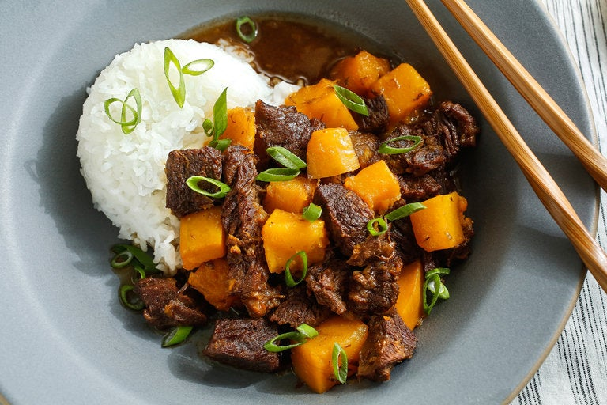

description
Have you ever wanted something, but you're not quite sure what. You have a craving for something savory, and heart but also.. je ne se quoi.. well this is that. A stew that makes use of japanese flavors to boost umami and add a bit of sweetness. To make this delicious dish, you are going to need:
- boneless chuck roast
- dashi
- soy sauce
- mirin
- ginger
- lemon
- butternut squash or winter squash
- salt & pepper
steps
- sear meat in a large dutch oven, when nicely browned remove into a seperate container
- add stock/dashi to dutch oven and heat to high. stir and scrap until all solids are integrated. add soy sauce, mirin, ginger and season with pepper. peel lemon and add peel. juice lemon into mixture.
- add meat back to dutch oven, cover and allow to steady simmer. stir after 30 minutes, check dutch oven every 15 minutes.
- once the meat is nearly fork tender, stir in squqash and cook until the squash is tender. add salt to taste